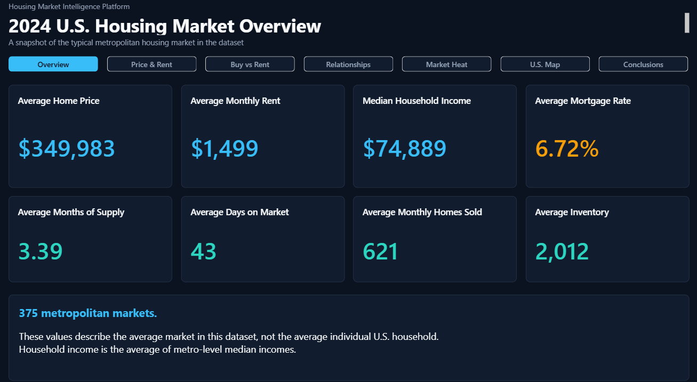
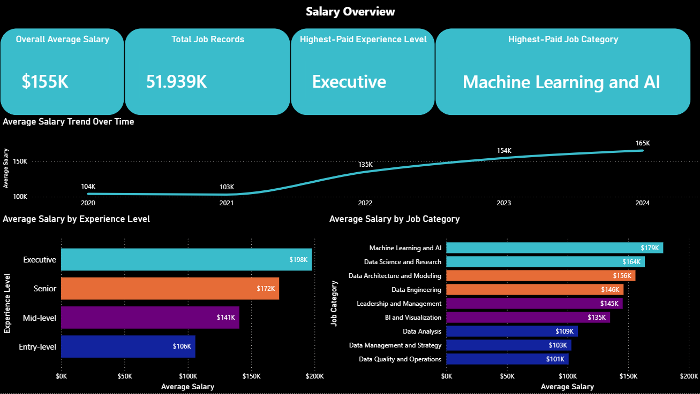

A
Open to data analyst internships and entry-level roles
Abahoor Lion Data Analyst
I turn raw, messy datasets into clear, decision-ready insights through careful cleaning, SQL analysis, and focused visual storytelling.
- 375
- housing markets
- 51,939
- salary records
- 40,044
- bike trips
Sample code from my projects
Choose a project, then switch between its SQL and Python/Pandas work.housing_market_intelligence_platform.sql
Housing Markets · SQLSELECT COUNT(*) AS markets,
ROUND(AVG(avg_sale_price)) AS avg_price,
ROUND(AVG(avg_rent)) AS avg_rent
FROM market_map_2024;marketsavg_priceavg_rent
375$349,983$1,499
The selected sample shows a SQL market profile across 375 housing markets.
01 / About
Practical analysis, built on reliable data.
I am a Computer Science student at the College of Staten Island who enjoys solving practical problems with data. My work focuses on making complex datasets useful: cleaning inconsistent fields, integrating multiple sources, validating assumptions, querying the result, and building dashboards that make the findings easy to understand.
Across academic, personal, and internship work, I have used Python, SQL, Snowflake, dbt, MySQL, and Power BI to move from raw records to analysis-ready models and clear reporting.
- 01CleanResolve missing, inconsistent, and messy values.
- 02ValidateCheck structure, coverage, joins, and assumptions.
- 03QueryAnswer focused business questions with SQL.
- 04VisualizeTurn findings into clear, usable dashboards.
02 / Skills
Tools for the full analysis workflow.
Grouped by how I use them—from preparing source data to communicating results.
B
Databases & BI
C
Data workflows
D
Tools
03 / Featured work
Data projects with a clear question and a complete path to insight.
Each project combines data preparation, analysis, and communication—not just a finished chart.

Housing Market Intelligence Platform
Integrated housing prices, rents, income, mortgage rates, and market activity into one standardized model for comparing affordability and supply across U.S. metropolitan areas.
- Standardized mismatched Census, Redfin, and Zillow geographies with a reusable bridge.
- Built Python ETL pipelines, validation checks, a MySQL model, and analytical SQL views.
- Delivered a seven-page Power BI dashboard covering 375 complete markets.

Data Salary Intelligence Analysis
Combined three differently structured salary datasets into a consistent analytical model for studying compensation across roles, experience levels, locations, and work settings.
- Cleaned salary ranges, missing values, categories, locations, and work-setting fields in Pandas.
- Created ten MySQL views for repeatable business analysis and Power BI reporting.
- Documented both findings and limitations, including unequal samples by year and work setting.
JC-202601ride summary
40,044cleaned trips
Peak hour5:00 PM
Citi Bike Analysis
Prepared Jersey City trip data for SQL and dashboard analysis to identify usage patterns, peak demand, popular stations, and differences between member and casual riders.
- Engineered ride duration, hour, day, and weekend fields with Python and Pandas.
- Structured the cleaned data for MySQL queries, reusable views, and Power BI reporting.
- Found that electric bikes represented 68.7% of rides and activity peaked at 5 PM.
04 / Resume
The concise version, ready to review.
Download my résumé for experience, education, certifications, and a focused view of my technical background.
05 / Contact
Let’s connect.
I am interested in internships and entry-level data analyst opportunities where careful analysis and clear communication matter.